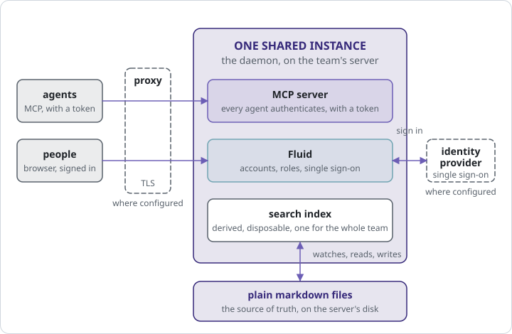
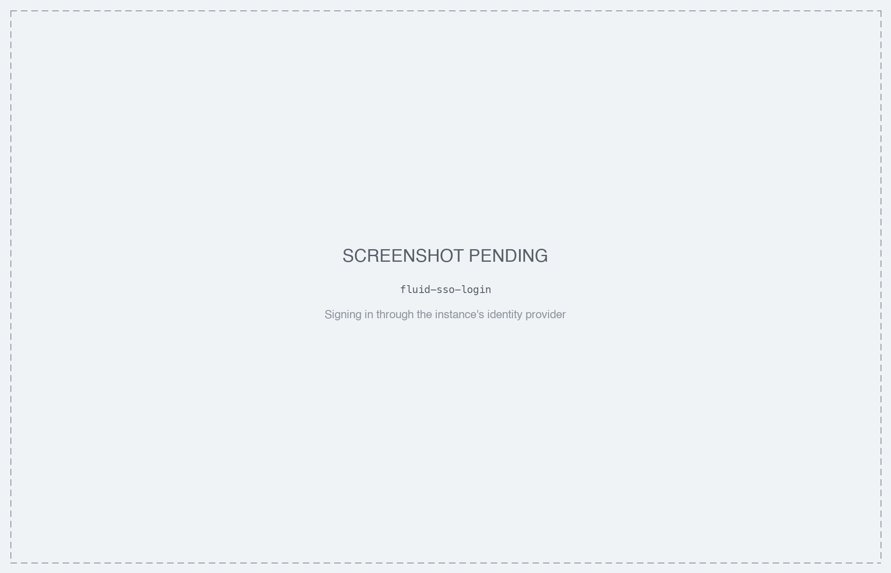

The moment to leave localhost is the moment two people want to correct the same engram. Up to then a laptop is the right size: one person, one agent, one folder, nothing to operate. Past it, every fact the team learns is being taught twice and drifting once, and the fix is the oldest one in computing. Put it on a server, give everyone a login and let one instance be the one the whole team teaches.
The questions arrive in a fixed order, and the chapter follows it: where the instance runs; who may sign in, and how, the question chapter 4 handed here; how an agent on somebody’s laptop proves who it acts for; and how one person keeps a domain to a smaller circle.
7.1 When to move off localhost
Chapter 1 settled where Crystalline runs: on a machine of yours, never on a hosted service. This chapter is about which machine. Three signals, any one of which is enough. Somebody who never opens a terminal wants to read what the agents learned and fix a fact without asking. An agent runs somewhere that is not a laptop, a hosted runner or a bot with a task, and needs to recall and capture like everyone else. Or the same engram has been corrected on two laptops in two directions.
A shared instance differs from a team domain, chapter 13’s subject, where a folder lives in a GitHub repository, each person runs their own instance and knowledge travels between them as proposals the team reviews. A shared instance is one daemon everyone connects to: one index, one Fluid, one set of accounts, one folder of files on one disk. The two compose, and a mature team usually has both.
7.2 The shapes it takes
The full guide is docs/deployment.md in the repository, one scenario per section with a diagram each; this chapter summarizes. The shapes reduce to one picture (Figure 7.1): the daemon on a server, teammates’ agents reaching it over MCP on HTTP instead of a local pipe, browsers reaching Fluid on the same port, and, where the team configures them, a proxy in front and an identity provider beside it.

The team server is a container. The published image binds 0.0.0.0:7411 inside it, keeps the knowledge as a bind mount so the files stay exactly the markdown they were, and puts the index on a volume:
docker run -d \
--name crystalline \
-p 7411:7411 \
-v "$(pwd)/knowledge:/knowledge" \
-v crystalline-data:/data \
ghcr.io/jordiboehme/crystalline:latestThe with-model tag bakes the embedding model in, for a host with no egress. The same shape without a container is the .deb’s systemd unit: put CRYSTALLINE_SERVICE_HTTP=0.0.0.0:7411 in /etc/default/crystalline and run sudo systemctl enable --now crystalline. A scale-out variant serves Fluid from an nginx tier in front of the daemon, and a read-only shape, --read-only, serves knowledge curated as a reviewed repository: the writing tools vanish from what an agent is offered while the index keeps following every pull.
Whatever shape you pick, a few things follow you into it. An agent reaching the daemon by a hostname needs that name in CRYSTALLINE_SERVICE_ALLOWED_HOSTS, since the MCP transport checks the Host header against a loopback-only allow-list to block DNS rebinding. Serve it over TLS anywhere but localhost, since the session cookie is marked Secure off loopback and a browser on plain http://team.lan will not keep it. And a proxy in front must forward Host verbatim, pass the WebSocket upgrade through for co-editing and accept 10 MiB request bodies, as the daemon does.
7.3 Accounts and roles
Nothing is readable until an account exists. A fresh instance greets the first browser with the create-first-admin form from chapter 6, with one difference: a daemon bound to anything but loopback cannot trust a visitor by where they connected from, so it prints a one-time setup token as it starts and the form asks for it. Read it in docker logs crystalline, or journalctl -u crystalline under systemd; a restarted daemon prints a fresh one. The terminal route needs no token: crystalline users add ada --role admin writes the accounts database directly, and a running daemon picks the account up on its next lookup.
Three roles, each containing the one before: a viewer searches, reads and browses; an editor also writes and edits engrams; an admin also manages domains and users, from crystalline users or from Fluid. Accounts live in a small database beside the index, never inside it, so reindex --full cannot take them along; on the container it sits on the /data volume and no rebuild restores it, so back the volume up.
When somebody leaves, an admin disables or deletes the account, and deleting sweeps whatever the account had connected. That is the whole deprovisioning story; there is no directory sync and no SAML.
7.4 Single sign-on
Local accounts are right for a team of nine. Inside a company that already has an identity provider, people should sign in with the login they already have, and Crystalline talks to the provider through one generic integration, OpenID Connect, with no adapter per vendor. The configuration is three keys, auth.oidc.issuer, auth.oidc.client_id and auth.oidc.client_secret, plus a label for the button and the scopes if the defaults do not suit; discovery, PKCE and key rotation are the integration’s job. Fluid’s login page then shows “Sign in with” the label beside the local form (Figure 7.2), and both keep working, so an instance can run mixed: local accounts for bots and the break-glass admin, everybody else through the provider.

The first successful sign-in creates the account, named from the provider’s preferred username and made unique if it collides, at the role auth.oidc.default_role says, viewer unless you change it. What the account is keyed on is what most such integrations get wrong: the durable key is the pair of issuer and subject, the provider’s own stable identifier, never the username, the email or the display name. Those are presentation; rename yourself at the provider and you land in the same account with a new label. And there is no silent linking: signing in through the provider with an email that matches an existing local account gets you a fresh account, never the existing one, and linking the two is an explicit act by the signed-in local user or by an admin. The provider authenticates and Crystalline authorizes; a group at the provider does not become a role here.
Microsoft Entra publishes a tenant-independent discovery document whose issuer field carries the literal text {tenantid}, and an issuer check against that template fails for every token. Crystalline refuses that value at configuration time and names the fix: the issuer must be your tenant’s own https://login.microsoftonline.com/<your-tenant-id>/v2.0. Prefer a certificate credential over a client secret where the deployment allows it. And know that Entra’s subject identifier is pairwise per app registration, so re-registering the application breaks every link between provider identities and Crystalline accounts, and an admin has to re-link them.
7.5 Trusted-header mode
Some deployments already have a proxy that authenticates everybody and names the arrival in a request header, and Crystalline can consume that. auth.trusted_header names a single custom header, remote-user say, and an account it names is created at viewer role the first time it is seen.
A second form, auth.proxy_headers, takes the standard set that forward-auth proxies emit, Remote-User, Remote-Name, Remote-Email and Remote-Groups, using the first for identity, the next two as presentation and reading the groups without acting on them. Pick one form or the other; a daemon configured with both refuses to start. Both are off by default, and a header that arrives while the mode is off buys the sender nothing.
Now the warning, which the documentation does not soften, so neither does this page. Header mode trusts the proxy completely, because a header is a line of text anyone can add to a request. It is safe only when Crystalline is unreachable except through the proxy, and the proxy strips any client-supplied copy of those headers before setting its own. A daemon reachable on its port directly is an instance where anybody can be anybody. If you cannot say with confidence that the only path to the port runs through the proxy, use single sign-on instead. And create the first admin before the proxy goes in front: a request carrying forwarding headers is never counted as local, so the setup form behind a proxy asks for a token that a loopback-bound daemon never printed.
7.6 Agent authentication
On a laptop the MCP endpoint is open, on loopback, to whatever local process reaches it, and that is the right trade for one person. On a shared instance turn on auth.mcp, and from then on every agent that connects over HTTP identifies itself, exactly as a person does. There is no half-way tier: a connection without credentials is refused before any session opens, with a message naming how to get one; HAL refused Dave with less courtesy. The open tier exists only on an instance that leaves the setting off, and sees only the domains everyone sees. An agent that could search a shared instance anonymously would be a colleague with no name on the commit.
The credential is a token that belongs to a person. Each user issues their own in Fluid, under the Agent access card on their profile, or an admin mints one for any account with crystalline users mcp-token <name>; either way it is shown once, and the instance keeps only a hash. It travels as an Authorization: Bearer header on the server’s entry in the harness’s MCP registration, never expires on its own and stops working the instant it is revoked or rotated, because every request looks it up. Every account may issue one, viewers included, and that is safe because of what the token means.
What it means is that the agent is its user. It sees what that person sees, writes where that person may write, shares under that person’s identity when a team domain is involved, and the engrams it captures record which client acted for which account. A viewer’s agent is therefore read-only with nothing further to configure, and a leaked token names one person, whose one token is revoked. One caller needs no token: the CLI and a stdio session on the server itself are the machine’s owner and see everything, which is the honest statement of what a filesystem already permits.
7.7 Private domains
The first rule of a private domain is: you do not talk about the private domain. The second rule of a private domain is: the instance DOES NOT talk about the private domain.
- with sincere apologies to Chuck Palahniuk
By default whoever may sign in sees every domain. Some knowledge belongs to a smaller circle, the founders’ notes on a funding round or one person’s working knowledge on a company-wide instance, and a domain can be made private. It is then visible to its owner, to the instance’s admins and to whoever the owner invites, each member at one of three levels: a viewer reads and searches, an editor also writes and a manager also runs the membership. The owner is one person, and only the owner or an admin changes the domain’s visibility, transfers it or deletes it. Transfer is how a private domain survives its owner leaving.
Two truths belong here, and the second is printed on the toggle itself so nobody discovers it later. Instance admins see and administer every domain, private ones included. And a private domain protects its contents from the instance’s other users, not from whoever operates the machine, because the engrams are files on that machine’s disk, with no encryption at rest. If the threat is the operator, the answer is a different machine.
Visibility follows the caller onto every surface: search, reading, build_context, the routing briefing, the graph, the maintenance sweep, exports and Fluid’s domain list all show a private domain only to those who may see it. To everyone else it does not exist, literally: a search or a read against a domain you may not see answers exactly as it would for one that was never registered, because a “forbidden” would already say something. That is the second rule. Writes check the membership level rather than the instance role, so an instance editor invited as a viewer is told, when they try, that editor access is what the domain requires. Members are managed from a Members card in the domain’s settings, or on the server with crystalline domain members <domain> add <user> --level editor and its list and remove siblings. Agents inherit all of this from their user and administer none of it; there is no tool for changing membership, on purpose. Membership records live in the accounts database beside the index, so a wipe and resync of the index leaves every permission where it was.
Tyrell moves in June, after the second time Ripley and Deckard corrected the same engram in two directions. Ripley runs the container on the team’s server, behind the TLS proxy that fronts everything else, the first admin created before the proxy went in. She points auth.oidc.issuer at the company’s identity provider, everybody signs in on Monday with the login they already have, and she promotes the engineers to editor. Then she turns on auth.mcp. Deckard’s agent, pointed at the server over HTTP, is refused at once with a message saying where to get a token; he issues one on his profile, pastes it into his harness registration, and the next session opens with a briefing that names engineering and clients, learned by everyone, recalled by his.
Dallas, who runs the company, keeps a board domain for the funding round. He makes it private and invites Ripley as a manager and Lambert as a viewer. Deckard’s agent, asked about the round, searches every domain it can see and reports that nothing is known; Ripley’s, acting as Ripley, finds the notes at once; Lambert’s, trying to capture a fact into board, is told that her membership is viewer and proposes writing to clients instead. One team, one instance, one folder of files on one disk, and every action in it with a name attached.
Somebody has to be the one who runs the server, and the rest of the team gets to forget it exists. That is the whole point of a shared instance: one place everybody teaches, and one login that says who did.
Move off localhost when a team wants to teach one knowledge base: run the container, the systemd unit or the read-only shape from docs/deployment.md, serve it over TLS, and create the first admin with the setup token the daemon prints or with crystalline users add. Accounts come in three roles, viewer, editor and admin, created locally or on first sign-in through any OpenID Connect provider, keyed on issuer and subject and never linked by email; trusted-header mode is safe only when the proxy is the only path in. With auth.mcp on, every agent over HTTP authenticates with a per-user token and acts as that user, with no unauthenticated tier beside it. A private domain is visible to its owner, the instance’s admins and invited members on every surface, and it protects from other users, never from whoever operates the machine.